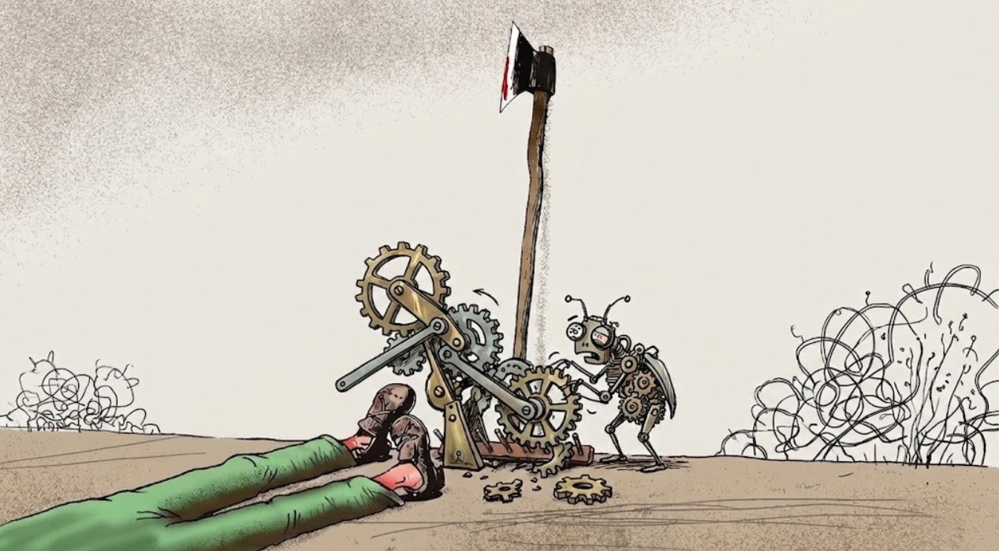
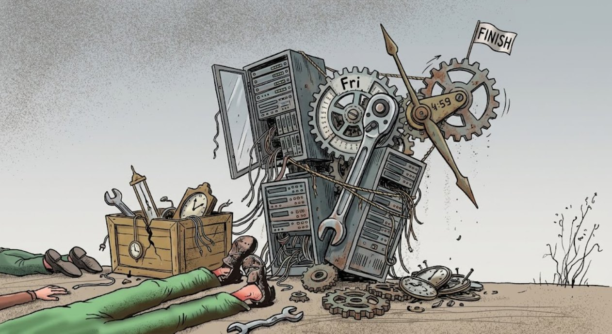
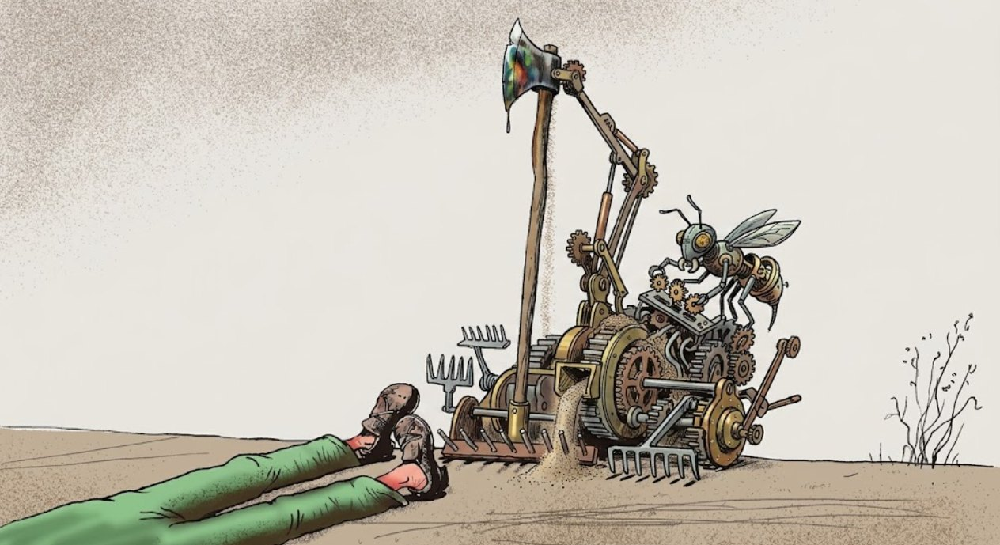

A tutti noi hanno insegnato a scrivere codice bello: all'università, o nei libri intelligenti, ci dipingevano un mondo ideale fatto di funzioni pure, pattern eleganti e matematica perfetta. Poi però entri in uno studio e scopri che la vera codebase di un motore è un aggeggio messo insieme alla bell'e meglio, dove la memoria perde, i thread se le danno, il sistema operativo ti porta via i core durante l'esecuzione e il motore fisico spedisce il giocatore in orbita solo perché qualcuno ha confuso gli indici degli assi.
Il debug dei bug è forse la competenza ingegneristica più sottovalutata che ci sia. Non la si insegna davvero, quasi mai la si chiede di «illustrare» a un colloquio, e in vita mia non ho ancora incontrato un senior debugger. Tutto l'apprendimento si riduce a startene seduto tre ore a fissare un crash dump, cercando di capire perché il gioco è caduto. Di ricette per catturare e sistemare i nostri amici chitinosi ce ne sono mille e una, e ognuno avrà immancabilmente la propria, quindi non vedo il senso di elencarle — ma proverò a raccontare quali tipi di amici esistano.
Il banale refuso
La classe di errori più irritante: quella in cui il tuo pensiero ingegneristico era assolutamente corretto e l'algoritmo impeccabile, ma le dita hanno corso più veloci del cervello e hai semplicemente mancato un tasto. Nel codice dei motori è ordinaria amministrazione lavorando su qualunque cosa, e di solito ha a che fare con il copia-incolla o con una variabile dimenticata nella fretta:
if (update_x) pos.x = new_pos.x;
if (update_y) pos.x = new_pos.y; // la mano è scivolata
if (update_z) pos.z = new_pos.z;La cosa più odiosa dei refusi è il nostro cervello, che funziona come un correttore automatico incorporato. Guardi questo pezzo di codice dieci volte e l'occhio semplicemente «scorre oltre» l'errore, perché tu sai cosa dovrebbe esserci scritto — solo che lì non c'è scritto. A un certo punto mi sono stancato di scovare cose del genere e nel progetto abbiamo attivato clang-tidy con bugprone-* e -Wshadow sulla build clang, che salvano dalla maggior parte dei bug con nomi di variabili che si oscurano a vicenda e dalla mano scivolata.
class Foo {
int value;
public:
Foo(int value) { // il parametro oscura il campo della classe
value = value; // non fa nulla, assegna il parametro a se stesso
}
};Il bug logico
E poi c'è il codice che fa quello che hai scritto... letteralmente lo fa, ma si può scrivere una sciocchezza, per esempio sbagliare di uno (off-by-one) quando aggiorni un buffer circolare di eventi o provi a rimuovere un elemento da un array:
memmove(events + i, events + i + 1, (num_events - i) * sizeof(*events));
--num_events;Ma con bug del genere è perlomeno piacevole lavorare, e se esiste uno scenario di riproduzione stabile saranno deterministici al 100%. Ti siedi e cammini con il debugger. Gli sviluppatori però hanno la pessima abitudine di generarsi bug logici con le proprie mani, ottimizzando il codice prima del tempo. Comincia tutto, come sempre, con le migliori intenzioni: «oh, fammi scrivere del codice a parte per il fast path, o per il caso raro in cui rimuoviamo proprio l'ultimo elemento». Il risultato è un ramo if/else che viene eseguito una volta a settimana con una particolare posizione della luna, e che naturalmente non viene testato per bene. E ovviamente è proprio quello che esplode a casa del giocatore. Più il codice è lineare e meno rami rari e isolati contiene, meno sono i posti in cui la logica può tenersi in silenzio un amico chitinoso.

Scrittura oltre il bordo dell'array
Quanti anni ha ormai il C++, e di questi bug non si vede né capo né coda. La logica sembra impeccabile, l'algoritmo è buono, e il sistema va comunque in crash, perché i dati in ingresso non erano quelli su cui si contava. Hai dichiarato un array fisso da 1024 elementi, perché la memoria dinamica in un gioco è peccato, e hai scritto una semplice funzione di spawn:
#define MAX_PARTICLES 1024
Particle particles[MAX_PARTICLES];
uint32_t num_particles;
void spawn_particle(Particle p) {
particles[num_particles++] = p;
}Qualcuno immancabilmente farà spawnare la 1025-esima particella e un codice così andrà a sovrascrivere la memoria vicina, e comincerà l'inferno dei crash strani. Direte che bisogna riscrivere tutto d'urgenza con array dinamici? Ma i pool fissi sono prevedibilità e protezione dalla frammentazione, nel gamedev servono, quindi niente da fare: la dinamica ve la scordate.
Perdite di risorse
Un caro amico del tipo precedente: anche lui va avanti da anni e il carro è ancora lì, o meglio, i bug sono sempre gli stessi. In un motore di gioco può perdere di tutto: texture, mesh, descrittori di file, mutex acquisiti — su Nintendo Switch, nelle prime revisioni, un mutex ricorsivo non veniva distrutto se rientrava in se stesso più di cinque volte, e in tutto se ne potevano creare 1024 per processo.
E se scrivi codice su malloc e free nudi e crudi, dare la caccia alle perdite diventa un'altra occupazione quotidiana. Trovare però quale esattamente delle cinquecento chiamate di allocazione non ha ricevuto la sua free è un compito con l'asterisco. Se pensate che un GC intelligente o gli smart pointer risolvano il problema, no... non lo risolvono. Cambiano semplicemente la natura delle perdite: al posto di una perdita di memoria otteniamo una perdita di riferimenti, e un qualche dimenticato gestore della scena continua a tenere un riferimento a un oggetto invisibile, che a sua volta, a catena, tiene texture e suoni.
Nei motori la si combatte così: nessuna chiamata diretta all'allocatore di sistema, tutte le allocazioni passano per un wrapper personalizzato con strumentazione, e dopo si può guardare la mappa della memoria — cosa, dove, chi e chi. E al momento di scaricare un livello è consuetudine confrontare l'elenco delle allocazioni con quello delle liberazioni: se è rimasto qualcosa, allora da qualche parte si perde.
Corruzione della memoria
Se il debugging avesse un podio, la corruzione della memoria andrebbe messa senza dubbio sul gradino più alto: use-after-free, uscita dai limiti dell'array, scrittura tramite un puntatore «selvaggio», corruzione dell'header di un blocco di allocazione, doppia cancellazione e ricreazione dentro un'area già marcata — cos'altro ho dimenticato?
L'orrore di questi bug è che causa e sintomo sono separati nel tempo e nello spazio. La funzione A da qualche parte nel modulo di fisica ha leggermente sovrascritto il bordo di un array vicino, e la fisica continua a funzionare, ma da qualche altra parte un widget della UI si disegna male mentre prova a mostrare il nome del giocatore — e vada bene se mostra caratteri strampalati, perché può anche uscire con un Access Violation. Ed eccoti lì, seduto su un crash dump della UI, senza capire cosa c'entri l'interfaccia.
L'unica cosa che ti salva la vita in situazioni del genere è AddressSanitizer (ASan) e i confini speciali dei blocchi di memoria (le canarie). ASan circonda tutte le allocazioni con «zone rosse» protettive e cade nel momento della scrittura non valida, senza lasciarti rovinare le strutture vicine. E scrivere pattern come 0xDEADBEEF nei blocchi liberati fa capire subito nel debugger che stai provando a leggere il «cadavere» di un oggetto.
La race condition
Un motore moderno parallelizza tutto ciò che può. La fisica su un core, la preparazione del frame su un altro, lo streaming delle risorse e l'AI su un terzo — ma quando due thread provano contemporaneamente a lavorare sugli stessi dati senza sincronizzazione, ecco che arriva lui: la Race Condition.
La cattiveria principale delle race condition è che non vivono sotto un debugger; in realtà non vivono da nessuna parte, e basta mettere un breakpoint, o semplicemente aggiungere un log, perché i tempi dei thread cambino e il bug sparisca senza lasciare traccia — poi togli il breakpoint e il gioco torna a cadere. I puntelli fatti di mutex sono di solito una soluzione temporanea e in sostanza sono lo stesso tipo di espediente: spostano la gara da un'altra parte.
Il fix del venerdì
I bug del venerdì nascono di rado da errori fondamentali di architettura; la loro fonte principale è la fretta, l'occhio annebbiato e una tazza di caffè di troppo. Ma i bug del tipo «ma dai, ho solo sistemato un operatore condizionale, non si romperà niente» meritano da tempo una categoria a parte; peccato che l'umanità non abbia mai inventato un FridaySanitizer.
// Venerdì, 17:55. Sistemiamo un raro sfarfallio dell'icona della salute
void UIHealthBar::Update(float DeltaTime)
{
// "Già che ci siamo puliamo il cast, il validatore si lamentava..."
PlayerCharacter* Player = Cast<PlayerCharacter>(GetOwningPawn());
// Qui prima c'era un controllo if (Player), ma lo sviluppatore è certo
// che la UI HealthBar esista SOLO quando il giocatore è vivo e valido.
HealthPercent = Player->GetHealth() / Player->GetMaxHealth();
}Il codice finisce nel repository, viene compilato e va ai tester. Ma il sabato mattina si scopre che quando il giocatore muore, rinasce o carica un livello dal menu, la UI viene disegnata un frame prima che venga creato l'oggetto del personaggio, e il puntatore Player risulta nullo. Il bug del venerdì prospera da qualche decennio, si intrufola attraverso review e test e aspetta la sua ora.

Gli heisenbug
Il termine è nato dalla fisica quantistica e dal principio di indeterminazione di Heisenberg, per cui il fatto stesso di osservare un sistema ne cambia lo stato. Nel mondo del C++ sono i bug che vivono solo quando nessuno li guarda. Dal QA arriva un ticket per un crash entrando in una grotta, avvii il progetto sotto il debugger, arrivi alla grotta... e non succede nulla. Funziona tutto... lo fai dieci, venti volte... spegni il debugger, avvii la build di release e ti becchi il crash. Di solito si riduce a memoria non inizializzata e alle ottimizzazioni del compilatore:
struct AttackParams
{
float Damage;
bool IsCritical; // dimenticato di inizializzarlo nel costruttore
};
void ApplyDamage()
{
AttackParams Params;
Params.Damage = 100.0f;
// Params.IsCritical contiene spazzatura casuale dallo stack
if (Params.IsCritical) {
// In una build Debug qui è sempre false perché lo stack viene azzerato.
// In una build Release può risultare true, e il critico parte a sorpresa.
}
}Oppure ai tempi del multithreading e ai log. Se provi a catturare una race tra thread aggiungendo logging, ottieni un rallentamento artificiale dei thread, e questo sposta il punto della gara, che così «sparisce»; togli il log e il bug torna. È proprio per questo che certi log sopravvivono con il commento non cancellare questo spazio.
void MeshLoader::OnAsyncLoadComplete(Mesh* LoadedMesh)
{
log("Mesh loaded: %s\n", LoadedMesh->GetName()); // Non cancellare questo log!!!
RenderQueue::Enqueue(LoadedMesh);
}Collegare un debugger o attivare speciali flag di debug cambia la dimensione dei file header e delle strutture dati (per esempio vengono aggiunti gli iteratori di debug in std::vector, o campi di validazione aggiuntivi nell'allocatore); di conseguenza gli indirizzi in memoria si spostano, e la corruzione della memoria che prima sovrascriveva dati importanti comincia a sovrascrivere un innocuo «cuscinetto di sicurezza» (guard bytes), mascherando il problema.
Il feature-bug («It's not a bug, it's a feature»)
E poi ci sono le situazioni in cui un difetto nella matematica o nella logica crea un'esperienza di gioco così geniale che gli sviluppatori decidono di non aggiustare nulla e si limitano a rinominare il bug in «meccanica».
Le combo in Street Fighter II inizialmente permettevano di annullare l'animazione di un colpo con un altro, ma era un bug dei tempi di animazione. Il producer Noritaka Funamizu, notandolo, decise che azzeccare il tempismo fosse troppo difficile e lo lasciò — e nacque l'intero genere dei picchiaduro moderni.
Il Gandhi aggressivo in Civilization. A causa dell'overflow di un intero senza segno a 8 bit, l'aggressività di Gandhi, scendendo sotto lo zero con l'adozione della democrazia, si azzerava a 255. Il leader pacifista si trasformava in uno psicopatico nucleare. In realtà è una leggenda e non è mai successo nulla del genere, ma il mito è diventato così famoso che gli sviluppatori del quinto capitolo ne hanno inserito la logica nel gioco, rendendo il mito reale.
Il bunny hopping in Quake. Un errore nella somma dei vettori di velocità durante il salto e la rotazione della telecamera permetteva di accelerare fino a velocità da caccia, il che consentiva acrobazie molto divertenti nei livelli. In linea di principio, se un bug rende il gioco più divertente non lo si sistema: lo si rifinisce e lo si consegna al marketing. Su questo è costruita un'intera serie di giochi, Saints Row, dove il QA prendeva premi per lo sfruttamento di vari bug che poi diventavano elementi delle meccaniche del gioco stesso.

L'effetto farfalla (floating-point math)
Bug che nascono dalla precisione limitata dei numeri in virgola mobile, quando il giocatore si allontana molto dall'origine delle coordinate. Più il giocatore è lontano dal centro, meno precisione resta per la parte frazionaria, e a una distanza dell'ordine dei 100 km la precisione del passo è di qualche millimetro; il risultato è che il modello comincia a «vibrare» di continuo e a scattare in modo epilettico mentre cammina, finché non viene sputato fuori dai confini del mondo.
Oppure porta ad artefatti di generazione, come in Minecraft (le Far Lands), dove a 12,5 milioni di blocchi di distanza dallo spawn l'errore del float nella generazione del rumore di Perlin diventava così enorme che il paesaggio si trasformava in giganteschi muri di formaggio bucherellato.
Dipendenze spaghetti
Bug divertenti, in cui il gioco cade solo a condizione che tu abbia aperto una porta tenendo in mano un determinato oggetto, e obbligatoriamente con un'angolazione di 45 gradi. In TF2 c'è il famoso mito metropolitano della texture di cocco dentro i file di gioco, senza la quale il motore Valve Source si rifiuterebbe semplicemente di avviarsi. Nei file di gioco c'è davvero una texture coconut.vtf, un file VTF con un'immagine realistica di una noce di cocco, e la sua origine risale all'update Love&War del 2014, da cui a quanto pare è rimasta come asset inutilizzato. La leggenda secondo cui cancellare il file rompe l'avvio del gioco è cresciuta soprattutto grazie a un commento scherzoso sotto il post originale del tipo «non ho idea di chi l'abbia messo qui, ma quando ho cancellato il file il gioco ha smesso di avviarsi», che in molti hanno preso per un vero commento di uno sviluppatore preso dai sorgenti.
Oppure il caso di Lineage 2, in cui i giocatori non riuscivano a entrare in una località perché nel loro inventario c'era un oggetto di quest del 2009 il cui identificatore coincideva con un nuovo tipo di animazione per un drago.
Inversione di priorità
Un bug dei motori multithread per cui il gioco comincia a laggare mentre lavorano thread a bassa priorità. Un thread a bassa priorità (per esempio lo streaming audio in background) acquisisce un mutex, poi un thread ad alta priorità prova a prendere quello stesso mutex e si addormenta, cedendo il tempo, ma proprio in quel momento un thread a priorità media (per esempio il calcolo dell'AI) impedisce al thread a bassa priorità di finire il lavoro e rilasciare il mutex. Il risultato è che il thread principale aspetta l'audio, l'audio aspetta l'AI e il giocatore guarda tutto quanto arrancare a stento, ammesso che si muova.
Bug del passo temporale variabile (Variable Delta Time)
Il prezzo da pagare per la rincorsa a un framerate sbloccato. Leghi la fisica o il movimento a quel dt che è trascorso tra un frame e l'altro.
// Se il frame è crollato da 60 FPS (16ms) a 2 FPS (500ms) per via del caricamento
position += velocity * dt; // dt è diventato gigantescoE in un unico frame lungo (per esempio quando il gioco ha «laggato») il personaggio attraversa da parte a parte un muro di tre metri, perché il collider fisico l'ha semplicemente scavalcato in un solo passo.
Cosa ho dimenticato?
Alla fine, il buon codice di un sistema di gioco si distingue da quello cattivo non per l'assenza di bug, perché errori li fanno tutti. Si distingue per quanto è facile fargli il debug, per l'accoppiamento dei suoi sistemi, per i confini fissi dei moduli, per come lavora con la memoria. Mentono tutti, e anche il codice... il codice soprattutto... non credete mai al codice sulla parola.
← Tutti gli articoli